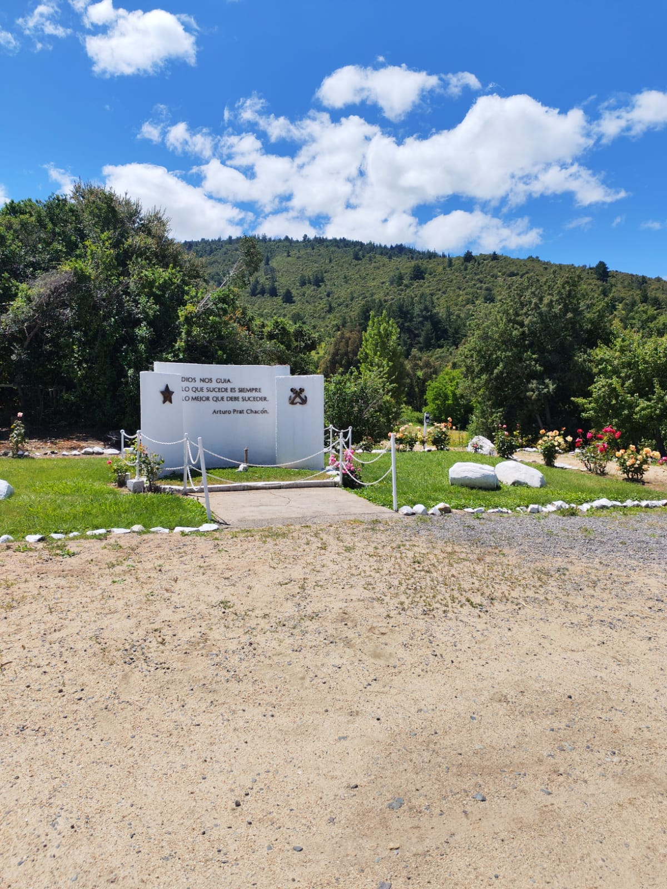

Nuestros Buses en Acción
Galería de Viajes
Nuestras unidades recorriendo los caminos de Chile. De la cordillera a la costa, siempre contigo.

Rutas de Chile
Cordillera, valles y costa.

Santuario Cuna de Prat
Servicio especial a Ninhue.

← Volver a los álbumes
Servicio Especial
Santuario Cuna de Prat, Ninhue
Realizamos un servicio especial al Santuario Cuna de Prat, en Ninhue, Región de Ñuble, lugar de nacimiento del héroe naval Arturo Prat. Un viaje lleno de historia y naturaleza, con la comodidad y seguridad de siempre.
¿Quieres organizar un viaje especial para tu grupo, colegio o institución?
Cotizar un servicio especial